Vanishing punctuated dynamics on high-dimensional fitness landscapes:
a deep-basin condition
Hiroyuki Nashida
Independent Researcher, Yokohama, Japan
The “punctuated” pattern of morphological stasis and rapid change in the fossil record has been attributed to the geometry of high-dimensional adaptive landscapes, where connected fitness ridges may trap populations for extended periods while transitions through low-measure corridors occur rapidly. Here we test this hypothesis by Monte Carlo simulation on high-dimensional fitness landscapes with two Gaussian fitness basins of tunable depth β superimposed on NK epistatic backgrounds (d = 10–300 loci), systematically mapping the (d,β) parameter space (> 1011 total Monte Carlo steps across ∼23,000 simulation runs).
We discover three distinct dynamical regimes: (i) a diffusive regime at low β, where populations traverse freely between basins with transit time scaling as dα with α ∈ [2,3]; (ii) a punctuated regime at intermediate β, exhibiting prolonged stasis interrupted by rare rapid transitions; and (iii) a frozen regime at high β, where populations are permanently trapped. Critically, the punctuated regime occupies a narrow band that shrinks and vanishes as d increases: present at d = 10–18, absent at d ≥ 20.
This vanishing is driven by concentration of measure on {0,1}d: as d grows, basin cores occupy a vanishing fraction of genotype space, requiring basin depth to scale with d to maintain population trapping—a deep-basin condition. A key finding is that the three-regime structure and its boundaries are independent of the microscopic epistatic structure (K = 0–16) for externally imposed basins, demonstrating that the phenomenon is governed by macroscopic basin geometry alone. Within the class of isotropic, externally imposed two-basin landscapes defined on the Hamming fraction, fitness landscape geometry alone is insufficient to sustain punctuated equilibrium; basin depth must scale with genetic dimensionality—a condition that, in biological systems, would need to be supplied by mechanisms such as stabilizing selection or developmental constraints. Companion papers (Nashida, 2026a,b) establish rigorous mathematical foundations: they prove that K-independence holds for all K = o(d)—with full O(log d) precision for K = O(1)—and that the rate function governing the hitting-time asymptotics is explicitly computable, analytically confirming the numerical findings reported here.
Keywords: punctuated equilibrium ⋅ fitness landscape ⋅ NK model ⋅ phase transition ⋅ high-dimensional genotype space ⋅ concentration of measure ⋅ deep-basin condition ⋅ Monte Carlo simulation
The fossil record frequently exhibits prolonged morphological stasis punctuated by brief episodes of rapid change, formalized as punctuated equilibria by Eldredge and Gould (1972). Empirical support continues to accumulate (Lieberman and Strotz, 2025), though stasis is the dominant mode in only 34–38% of fossil time series (Hunt et al., 2025).
One class of explanations appeals to the geometry of high-dimensional fitness landscapes. Gavrilets (1997) showed that in high dimensions, viable genotypes form connected “ridges” (holey adaptive landscapes), enabling evolution without valley crossing. Bakhtin et al. (2021) demonstrated that populations in the weak-mutation limit stagnate near saddle points and undergo rare rapid transitions, producing punctuated patterns as a “default mode.” Integrating these results, a natural hypothesis emerges: the high dimensionality of genotype space creates broad fitness ridges where populations are entropically trapped (stasis), connected by low-measure transition corridors traversed rapidly (punctuation), with intermediate forms rendered undetectable by observational filtering. A related perspective is offered by Bengio (2012), who argued that good local minima on high-dimensional loss landscapes require external mechanisms to reach—a parallel we explore in the biological context.
This “low-measure transition corridor” hypothesis is intuitively appealing but rests on an unproven geometric conjecture. High-dimensional percolation theory shows that the giant connected component on {0, 1}n has edge expansion Ω(1∕(d ln d)), suggesting good connectivity without bottlenecks—the mathematical opposite of low-measure corridors. The hypothesis therefore requires empirical testing. The need for such theoretical work is underscored by recent experimental studies: Papkou et al. (2023) mapped a fitness landscape of > 260,000 genotypes of an E. coli metabolic enzyme and found that, despite 514 fitness peaks, all high-fitness peaks share a single enormous basin of attraction, leading them to call explicitly for “new theory to understand the counterintuitive geometry of realistic high-dimensional fitness landscapes.”
We performed systematic Monte Carlo simulations on high-dimensional fitness landscapes with two tunable Gaussian basins superimposed on NK epistatic backgrounds, spanning the parameter space of genetic dimensionality d and basin depth β. Rather than confirming the low-measure corridor hypothesis, our results reveal a richer structure: three dynamical regimes separated by sharp phase boundaries, with the punctuated regime occupying a narrow band that vanishes in high dimensions. This finding inverts the original intuition: high dimensionality extinguishes punctuated equilibrium unless basin-deepening biological mechanisms compensate for entropic dilution. The regime boundaries are independent of the epistasis parameter K (K = 0–16), indicating that the phenomenon is governed by macroscopic basin geometry. These results connect to established frameworks in statistical physics—including Kramers escape theory (Hänggi et al., 1990) and quasispecies phase transitions (Tarazona, 1992).
Companion papers (Nashida, 2026a,b) establish rigorous mathematical foundations for these numerical findings. The K-independence observed here is proved to hold for all K = o(d) (with full O(log d) precision for K = O(1)), and the rate function governing the hitting time is explicitly computable from a birth-death chain analysis valid across both smooth and kinked basin types. These theoretical results confirm that the vanishing punctuated band is a general consequence of entropic dominance on high-dimensional product spaces.
Punctuated equilibria propose that evolutionary change concentrates at speciation events, with morphology stable for the majority of a species’ geological lifespan (Gould and Eldredge, 1977; Eldredge and Gould, 1972). Recent reviews confirm widespread empirical support (Lieberman and Strotz, 2025). Hunt et al. (2025) document that stasis is the dominant mode in approximately one-third of well-resolved fossil time series, establishing that the phenomenon is common but not universal.
Gavrilets (1997, 1999) proposed holey adaptive landscapes where viable genotypes form connected neutral networks (see Gavrilets 2004 for a comprehensive treatment). Gavrilets and Gravner (1997) proved the percolation threshold on {0, 1}n is p c ≈ 1∕n (where n corresponds to d in our notation), establishing giant connected components at low fitness thresholds; Krug and Oros (2024) provide a comprehensive recent account of accessibility percolation and phase transitions on fitness landscapes. Agarwala and Fisher (2019) showed that adaptive walk statistics on high-dimensional random landscapes depend subtly on evolutionary history, with low-dimensional intuitions breaking down in fundamental ways.
Bakhtin et al. (2021) showed mathematically that in the weak-mutation limit, large populations stagnate near saddle points for waiting times ∼ (kλN)−1 and transition in ∼ ln(N e)∕s time. Stasis duration and transition speed are governed by independent parameters—a result directly relevant to our phase boundary analysis.
Tarazona (1992) identified three phases for quasispecies on complex Hopfield-Hamiltonian landscapes (ordered, spin-glass, and disordered), providing a conceptual precursor to the present work. Kramers escape theory (Hänggi et al., 1990) predicts three regimes for a particle in a double-well potential as barrier height varies—a close physical analogy to our findings. Van Nimwegen and Crutchfield (2000) characterized “epochal evolutionary dynamics”—metastable phases punctuated by rare transitions—and identified a bounded region in (μ,N) parameter space where this dynamic operates efficiently. Hwang et al. (2017) identified multiple phase transitions in genotypic fitness landscapes generated by Fisher’s geometric model, providing a three-phase taxonomy conceptually parallel to our three-regime taxonomy.
We simulated evolutionary dynamics on the binary hypercube {0, 1}d with a fitness landscape consisting of two components: a tunable macroscopic basin structure and an NK epistatic background (Kauffman and Levin, 1987; Kauffman, 1993). Throughout this paper, d represents the effective number of independently varying genetic dimensions; see Section 5.3 for the biological interpretation. The fitness of genotype g is:
| (1) |
where fi are random epistatic fitness contributions drawn independently from the uniform distribution on [0, 1] (K nearest-neighbor interactions), ḡ = d−1 ∑ igi, and β is the basin depth parameter. The two wells are centered on the all-zeros and all-ones genotypes.
Measure concentration. The Hamming fraction ḡ has mean 1∕2 and standard deviation σ = 1∕(2). For basins defined by ḡ < h∗ or ḡ > 1 −h∗ (with h∗ = 0.35), the fraction of genotype space within both basins is:
| (2) |
where Φ is the standard normal CDF. This fraction decreases rapidly: 34% at d = 10, but only 0.03% at d = 150. The transitional (inter-basin) region therefore dominates genotype space in high dimensions—it is the basins, not the corridors, that have low measure.
Remark on the max-form basin. The basin bonus max(e−2ḡ2,e−2(1−ḡ)2) is piecewise smooth with a kink at ḡ = 1∕2. This “Regime II” geometry (kinked boundary saddle) is covered by Theorem 2.10 and Corollary 2.15 of Nashida (2026b), using the explicit K = 0 asymptotics of Nashida (2026a); the K-independence result therefore applies without modification (see Section 4.5).
We simulate a single lineage in the weak-mutation limit (Nμ ≪ 1): at each step, one random locus is flipped, and the mutant is accepted with Metropolis probability min(1, exp(scoeff ⋅ Δw)) where scoeff = 5.0 is a dimensionless selection strength independent of d. Each simulation is initialized near basin 1 by setting ∼ 10% of randomly chosen loci to 1 (yielding ḡ ≈ 0.1). The fitness landscape is symmetric under basin exchange, so initialization does not bias regime classification.
Transition definitions. A complete transition is a basin X → transitional → basin Y sequence with X≠Y . Stasis duration τstasis is the number of consecutive steps in one basin between successive complete transitions; transit duration τtransit is the number of steps in the transitional zone during a complete transition. Points with ntr = 0 are classified as frozen. Phase boundaries βhigh∗(d) (lowest β with zero transitions in all replicates) and βlow∗(d) (highest β at which the system remains non-frozen, i.e., total ntr > 0) are determined from Exp. 1 and Exp. 2 data. Table 1 additionally reports βpunct, the lowest β at which the stasis/transit ratio exceeds the punctuated threshold (ratio > 10); this is a distinct quantity from βlow∗.
Observational implications. The detection probability of transitional forms follows a Poisson process: pdetect ≈ r ⋅ ssample ⋅ ln Ne∕(2s2), where r is the fossilization rate, ssample is the stratigraphic sampling density, Ne is the effective population size, and s is the per-allele selection coefficient (distinct from the simulation parameter scoeff). Under typical paleontological parameters (Foote and Raup, 1996) (r ∼ 10−7, ssample ∼ 10−3, Ne ∼ 105, s ∼ 10−2), pdetect ≈ 6 × 10−6—confirming that transitional forms are effectively undetectable. However, low detection probability does not by itself imply punctuated equilibrium: the dynamical prerequisite—the existence of a punctuated regime—fails at high d.
The primary experiment (Exp. 1) systematically explored the (d,β) parameter space:
The following experiments (Exp. 2–4) support the core results reported in the main text. Experiments 5–9 are summarized in Supplementary Table S1 and Supplementary Figures S1–S6.
(2) Dimension precision scan. d ∈{12, 14, 16, 18} at 13 β-values with 30 replicates of 5 × 106 steps (1,560 runs), locating the precise dimension at which the punctuated band vanishes.
(3) Extended large-d runs. d ∈{80, 150, 300} at 14 β-values, with 50 replicates of 2 × 107 steps (2,100 runs; 109 steps per (d,β) point), confirming that ntr = 0 at high d reflects true freezing rather than insufficient observation time.
(4) Epistasis sensitivity (K). K ∈{0, 2, 4, 8, 16} at d ∈{10, 20, 40, 80, 150} with 8 β-values and 20 replicates per point (3,840 runs), testing whether regime boundaries depend on microscopic epistatic structure.
Across all dimensions examined, increasing basin depth β produces three sharply delineated regimes (Fig. 1; characterization curves in Fig. 2):
Diffusive regime (low β): Populations traverse freely between basins. The stasis/transit ratio is < 5, with thousands of complete transitions per simulation.
Punctuated regime (intermediate β): Populations exhibit prolonged stasis within basins, interrupted by rare rapid transitions. The stasis/transit ratio exceeds 10.
Frozen regime (high β): Populations are permanently trapped within a single basin; no complete transitions occur.
These three regimes are structurally parallel to the three-phase taxonomies reviewed in Section 2 (Tarazona 1992; Kramers theory; Hwang et al. 2017). Our contribution is demonstrating a concrete realization on high-dimensional discrete fitness landscapes where the intermediate regime has a dimension-dependent width.
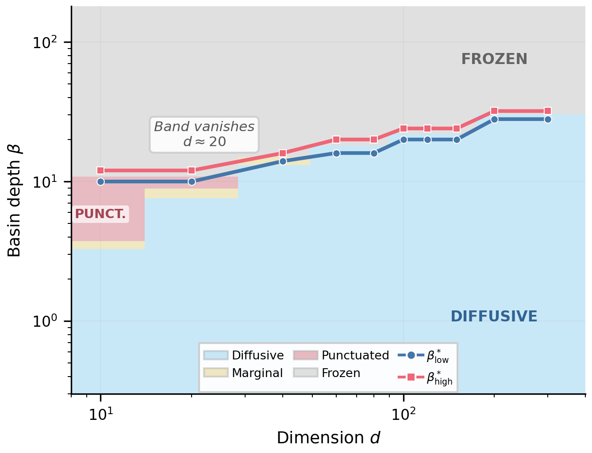
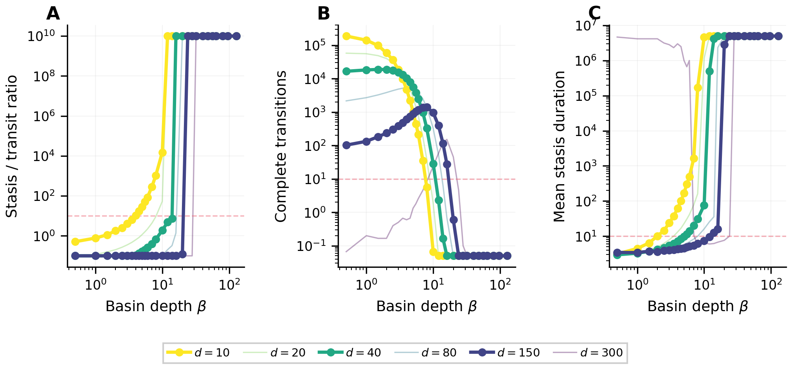
The central finding of this paper is that the punctuated regime occupies a narrow band in β-space that shrinks and eventually vanishes as d increases (Fig. 3; Table 1). A precision scan across d ∈{10, 12, 14, 16, 18, 20} (Exp. 2) reveals the vanishing in detail:
| d | βpunct | βhigh∗ | Band width | Key observation |
| 10 | ∼ 4 | ∼ 12 | ×3.0 | Punctuated at β = 4–8 (ratio = 10.5–1048) |
| 12 | ∼ 4 | ∼ 16 | ×4.0 | Punctuated at β = 4–8 (ratio = 11.7–1232) |
| 14 | ∼ 7 | ∼ 12 | narrow | Punctuated at β = 7–8 (ratio = 18.7–43.1) |
| 16 | ∼ 7 | ∼ 16 | narrow | Punctuated at β = 7–8 (ratio = 22.9–57.5) |
| 18 | ∼ 6 | ∼ 16 | narrow | Punctuated at β = 6–8 (ratio = 10.9–67.0) |
| 20 | — | ∼ 12 | absent | Maximum ratio = 9.1 (marginal at β = 8) |
| 40 | — | ∼ 16 | absent | No punctuated at any β |
| 80 | — | ∼ 24 | absent | Direct diffusive-to-frozen transition |
| 150 | — | ∼ 28 | absent | No punctuated regime at any β |
| 300 | — | ∼ 40 | absent | Direct diffusive-to-frozen transition |
At d = 300, the last diffusive point shows ntr = 19.3 and ratio ≈ 0.01, while β = 40 is fully frozen—the system transitions directly from diffusive to frozen. The frozen boundary βhigh∗ scales approximately as d0.34 (see Section 5.2).
Extended simulations (Exp. 3: 50 replicates × 2 × 107 steps; Supplementary Figure S1) confirm the absence of a punctuated regime at high d: at all points with ntr = 0 across 109 total steps, the Poisson 95% upper bound on the transition rate is < 3 × 10−9 per step.
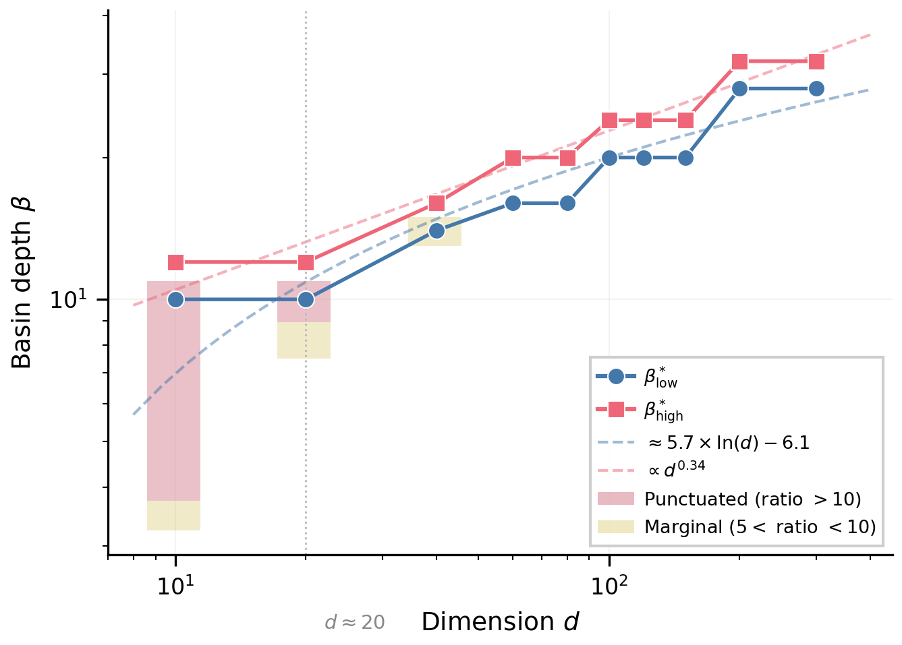
In the diffusive regime (β = 0.5), mean transit duration increases as τtransit ∝ dα with α ≈ 2.2 at low d (10–40; 95% CI: 2.06–2.38) steepening to α ≈ 3.0 over the full range (10–150). At low d, the exponent is broadly consistent with unbiased random walk predictions (α = 2.0; Feller 1968); the steepening at higher d reflects the increasing relative importance of the basin bonus as the NK fitness-effect magnitude decreases as 1∕d. The transitional region is not a “narrow corridor” traversed rapidly but a vast, flat expanse traversed slowly by diffusion.
The predicted negative correlation between stasis duration and subsequent transition speed is not observed: at all (d,β) points within the punctuated regime where ntr ≥ 50, Spearman |ρ| < 0.03 (p > 0.3), with > 99% power to detect |ρ|≥ 0.1. This reflects the absence of directional fitness gradients in the transitional region: the effective directional bias scales as ∼ β∕d per step, negligible relative to diffusive motion at large d. Low detection probabilities under the Poisson filter confirm that transitional forms are undetectable—but this conclusion is conditional on the punctuated regime existing at all.
The most consequential robustness result is the complete independence of regime boundaries from the epistasis parameter K (Fig. 4). At every (d,β) point tested, the stasis/transit ratio is virtually identical across K ∈{0, 2, 4, 8, 16}—spanning the full range from additive landscapes (K = 0) to strongly epistatic landscapes (K = 16). This is not merely a robustness check but a geometry-dominated universality result within this model class (externally imposed macroscopic basins): the three-regime structure is governed entirely by macroscopic basin geometry and measure-concentration properties of {0, 1}d, not by the microscopic epistatic architecture.
The physical mechanism is clear. The NK component contributes a per-mutation fitness perturbation |ΔwNK|≈ (K + 1)∕d, which decreases as 1∕d regardless of K. These perturbations are undirected—they do not systematically favor basin escape or retention—and their noise-to-signal ratio decreases as 1∕d while the entropic pull of the transitional zone grows combinatorially.
This epistasis independence is confirmed theoretically for the max-form basin function used in our simulations: the concentration inequality and capacity stability arguments underlying the general theorem (Nashida, 2026b, Theorem 2.10) are independent of whether the saddle point is interior or at the boundary kink, so K-independence extends rigorously to max-form basins (Regime II in Nashida 2026b).
Caveat. This universality result applies to externally imposed basins defined independently of the epistatic interactions. In biological systems where basins arise endogenously from epistasis itself —protein folding funnels, gene regulatory network attractors—the epistatic structure is the basin structure, and our K-independence result would not apply directly.
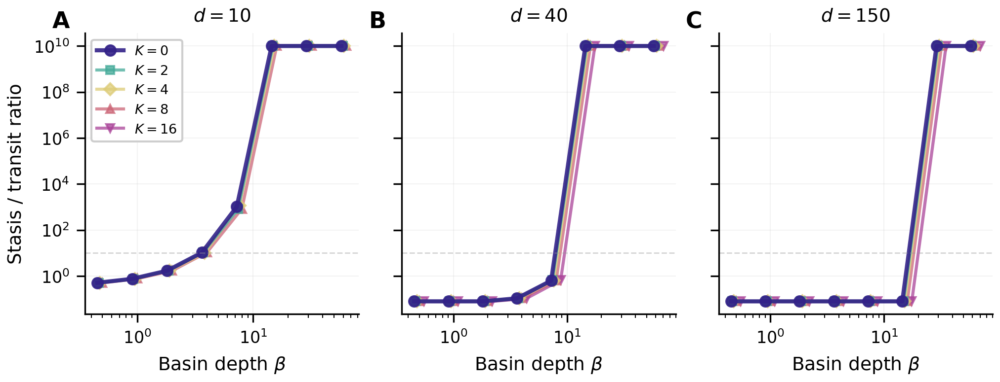
To locate the vanishing point precisely, Exp. 2 scanned d ∈{12, 14, 16, 18} at fine β resolution (Fig. 5). The punctuated regime persists up to d = 18 with progressively narrowing band: at d = 12 it spans β ∈ [4, 8] with ratios up to 1,232; at d = 14 and 16, only β = 7–8 yield ratio > 10; at d = 18, β = 6–8 are punctuated with maximum ratio ≈ 67; and at d = 20, no β produces ratio > 10. The vanishing is therefore continuous and monotonic: the band narrows gradually from d = 10 to d = 18 before closing at d ≈ 20.
This precision scan provides a model-specific upper bound for the effective dimensionality compatible with punctuated dynamics: deff ≲ 20 under the two-basin Gaussian model with scoeff = 5 and h∗ = 0.35, independent of K. This is a model-dependent benchmark, not a universal biological constant: changing basin shape, selection strength, or the two-basin geometry would shift the precise threshold (see Exp. 5 and Exp. 7 in Supplementary Figures S2 and S4). The value d ≈ 20 should be interpreted as an order-of-magnitude upper bound for the class of smooth, externally imposed two-basin landscapes studied here.
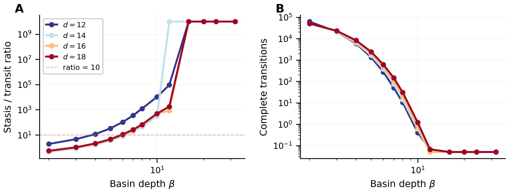
Exp. 8 (Supplementary Figure S5) replaces the Gaussian bonus with polynomial forms β ⋅ (1 − x)p where x = min(ḡ, 1 −ḡ)∕h∗, for p ∈{1.0, 1.5, 2.0}. No polynomial basin shape produces a punctuated regime at any dimension, even at d = 10 where Gaussian basins clearly yield punctuated dynamics. The Gaussian retains 78% of its peak value (exp(−2h∗2) ≈ 0.78) at the basin boundary ḡ = h∗; polynomial forms drop to zero at this boundary, removing the trapping force that sustains stasis. The Gaussian shape therefore represents a best case for punctuated dynamics, and d ≈ 20 is an upper bound on the vanishing threshold.
We organize the discussion in two layers. The first layer (Sections 5.1–5.2 and 5.5–5.6) concerns what our simulations directly establish: properties of the (d,β) phase diagram for isotropic, externally imposed two-basin landscapes on {0, 1}d. The second layer (Sections 5.3–5.4) concerns the biological interpretation— how the model’s predictions may map onto canalization, evolvability, and the fossil record. Results in the second layer are hypotheses and predictions, not consequences of the model alone; they require independent empirical validation.
Our simulations directly contradict the hypothesis that transitions occur through low-measure corridors in genotype space, within the class of smooth basin models defined on the Hamming fraction ḡ. The concentration-of-measure calculation (Eq. 2) and the dα (α ∈ [2, 3]) transit-time scaling both demonstrate that the transitional region between basins is vast, not narrow. At d = 50, the transitional zone contains > 96% of all genotypes; at d = 300, it is effectively the entire space. This conclusion is consistent with the high-dimensional percolation results: good edge expansion of {0, 1}d (Gavrilets and Gravner, 1997) implies absence of geometric bottlenecks. Gavrilets (1997) reached a qualitatively similar conclusion via percolation theory; our contribution is providing direct numerical confirmation and identifying the three-regime structure.
Furthermore, even the continuous fitness gradient in the transitional zone is entropically masked at high d: the effective directional bias scales as ∼ β∕d per step, negligible relative to diffusive motion. Our results refute the smooth-basin variant of the corridor hypothesis; the case of basins arising endogenously from structured epistasis remains open (Section 6).
For punctuated equilibrium to be maintained, basin depth β must overcome the entropic pull toward the high-measure transitional zone. Basin escape occurs when deleterious mutations are accepted at rate ∼ d ⋅ e−scoeff⋅Δw , where Δw ∝ β is the fitness differential. For escape time to exceed a threshold T (minimum stasis duration for geological observability), we require:
| (3) |
Note that βlow∗ is inherently T-dependent; in our simulations the operational proxy for T is the simulation length per replicate (5 × 106 steps), so the fitted prefactor 5.7 absorbs both 1∕scoeff and the ln T offset. Specifically, ln(d ⋅ T)∕scoeff ≈ (15.4 + ln d)∕5 ≈ 3.1 + 0.2 ln d at d = 100; the empirical prefactor 5.7 greatly exceeds the heuristic coefficient 0.2 because Eq. (3) is a lower bound that neglects the multiplicity of escape directions (∼ d independent loci) and stochastic basin re-entry. For biological observability timescales T ∼ 105–107 generations, the ln T term shifts the effective threshold by roughly 2–3 units, but the qualitative band closure at moderate d persists across this range.
Simultaneously, basin depth must remain below the freezing threshold βhigh∗(d). The precision scan (Exp. 1; Fig. 3) provides direct measurement across 10 dimensions with 29 β-values and 30 replicates per point. Eq. (3) is a heuristic lower bound; the empirical fits below are independent measurements of the actual phase boundaries from simulation data. These fitted laws are phenomenological summaries of the measured boundaries, not algebraic consequences of Eq. (3):
| (4) |
where the exponent 0.34 is obtained by ordinary least-squares regression of ln βhigh∗ on ln d across 10 dimensions using the truly frozen criterion (ntr = 0 across all replicates; R2 = 0.97; 95% CI: 0.30–0.38).
The exponent 0.34 is consistent with the theoretical asymptotic prediction: the companion analysis (Nashida, 2026b, Corollary 2.15) proves βhigh∗ ∼∕s (asymptotic exponent 1∕2); the downward bias over d = 10–300 is analytically explained by higher-order corrections to the rate function (Nashida 2026b).
The band closes not because of asymptotic growth rates alone (in the d →∞ limit, d0.5 eventually grows faster than ln d), but because of finite-size crossover: the prefactor 5.7 on the logarithmic term places βlow∗ above βhigh∗ for d ≳ 20. This biologically relevant finite-size regime, not asymptotic behavior, governs the vanishing of the punctuated band.
If β is interpreted as the net selective cost of intermediate phenotypes (see Section 5.3), the deep-basin condition implies that this cost must increase with the number of genetic loci involved—extending Orr’s (2000) cost-of-complexity framework to predict a minimum selection intensity required for punctuated dynamics.
What does β represent biologically? In our model, β is the coefficient of the Gaussian fitness bonus; formally, it sets the fitness difference between the basin center (ḡ ≈ 0 or 1) and the saddle (ḡ = 0.5), which equals β(1 − e−1∕2) ≈ 0.39β. Biologically, β is a coarse-grained proxy for the net selective cost of intermediate phenotypes: it can arise from stabilizing selection maintaining a phenotypic optimum, from developmental robustness mechanisms that make deviation from a canalized attractor costly, or from the steepness of a genotype-to-phenotype map around an attractor in gene regulatory network space. These three sources are not equivalent—stabilizing selection is a direct fitness effect, whereas developmental robustness modulates the effective landscape seen by a population, and attractor depth is a property of the dynamical system. In our single-locus-level model they collapse into a single parameter; disentangling them would require a more mechanistic model. The biological interpretations offered below should be read with this conflation in mind.
Note on discussion structure. The following subsections distinguish two levels of argument: (i) what our model numerically demonstrates (the deep-basin condition and its scaling), and (ii) hypotheses and analogies connecting these results to developmental biology and macroevolution. The latter are speculative extrapolations offered as potential research directions, not direct consequences of our simulations.
Waddington’s epigenetic landscape (Waddington, 1957) captures developmental trajectories as attractors of gene regulatory networks (Huang, 2009; Kauffman, 1993). The number of attractors—not the number of genes—determines the effective dimensionality of phenotypic space. The parallel between our fitness-landscape framework and Waddington’s epigenetic landscape is structural rather than exact; we offer it as an interpretive hypothesis, not a mathematical identity.
(The following is a biological interpretation and hypothesis; it extends beyond what our simulations directly demonstrate.)
Developmental canalization acts on our phase diagram through two simultaneous effects that both favor punctuated dynamics:
Basin deepening. Canalization—the tendency of developmental systems to produce discrete phenotypic outcomes despite genetic perturbation—is functionally equivalent to increasing effective basin depth β. A strongly canalized developmental program creates deep attractors, resisting perturbation from genetic variation. The molecular basis is well characterized: Hsp90 chaperone buffering (Rutherford and Lindquist, 1998; Milton et al., 2006), microRNA-mediated noise filtering, and redundant regulatory circuitry all increase the fitness cost of deviating from the canalized phenotype. Milton et al. (2006) demonstrated that Hsp90 controls canalization through threshold trait mechanisms; in our framework, this corresponds to modulating the precise location and curvature of the βlow∗(d) boundary.
Dimension reduction. Canalization also reduces the effective dimensionality deff of the phenotypic landscape. If dnominal ∼ 103–104 genetic loci contribute to a trait but developmental constraints channel their effects into deff ∼ 10–50 independently accessible phenotypic states, the relevant dimensionality for the deep-basin condition is deff. Our dimension precision scan (Section 4.6) provides a concrete constraint: deff ≲ 20 is required for landscape-geometry-mediated punctuated dynamics under our model.
The combination of these two effects is critical. Basin deepening alone can sustain punctuated dynamics at any d (by moving the system into the punctuated band from below), but requires β to scale with d—increasingly demanding. Dimension reduction relaxes this requirement. A strongly canalized organism simultaneously deepens its fitness basins and reduces effective dimensionality, doubly favoring punctuated dynamics. This “double effect” may explain why punctuated patterns are most prominent in morphological traits under strong developmental control (Lieberman and Strotz, 2025).
The deff ≲ 20 threshold is empirically testable. We stress again that this specific value is a model-specific benchmark (Section 4.6): with scoeff = 5 (Exp. 5), both boundaries shift and the band closes at a different d, so any biological translation of the threshold must account for the effective selection strength of the system. The value d ≈ 20 should be read as an order-of-magnitude guide, not a precise universal cutoff.
With this caveat in mind, the model prediction can be compared with independent empirical estimates of deff. The genetic variance–covariance matrix G provides a direct estimate through its effective rank (Kirkpatrick, 2009; Hine and Blows, 2006); empirical G matrices in insects, vertebrates, and plants typically have effective ranks of 5–20 even when nominal dimensionality is much higher (Hine and Blows, 2006). QTL studies for strongly canalized traits (e.g., vertebral number in snakes, digit number in tetrapods) typically identify ∼ 3–10 major-effect loci (Mackay, 2001), while weakly canalized traits (body size, limb proportions) involve hundreds.
Recent empirical work reinforces the relevance of evolvability and canalization as predictors of macroevolutionary dynamics. Holstad et al. (2024) demonstrated that evolvability—the capacity for heritable phenotypic variation—predicts macroevolutionary divergence across a broad range of taxa, with traits exhibiting higher evolvability showing larger divergence at macro-scales. In our framework, this corresponds to a deff-dependent mechanism: traits with higher evolvability (higher deff) lie outside the punctuated band, producing diffusive divergence rather than discrete stasis-and-jump dynamics. Pélabon et al. (2025) identify the causes of stasis—stabilizing selection versus genetic constraint—as an open key question (their Question 10); our (deff,β) phase diagram offers a complementary framework in which both mechanisms play a role. Specifically, stabilizing selection increases β, and developmental constraints reduce deff; within our model, punctuated dynamics arise whenever the pair (β,deff) falls within the punctuated band, regardless of which mechanism is responsible. The companion analysis (Nashida, 2026b) quantifies this boundary through Corollary 2.15.
This prediction is falsifiable within the model’s framework: if a trait with independently estimated deff > 20 nonetheless exhibits punctuated stasis in the fossil record, this would indicate either that mechanisms beyond smooth-basin landscape geometry are maintaining the pattern, or that the effective β is substantially larger than typical—precisely the conclusion our deep-basin condition framework predicts for high-dimensional traits.
(Speculative; offered as a direction for future empirical testing.)
The release of cryptic genetic variation through environmental stress (Rutherford and Lindquist, 1998) can be understood as a reduction in effective β—a shallowing of developmental basins that triggers a regime transition. Stress-induced morphological change should be directional (punctuated) when decanalization is moderate (pushing the system from frozen into punctuated) and diffusive when decanalization is severe (pushing into the diffusive regime). Post-extinction radiations may represent global frozen → punctuated phase transitions: rapid adaptive radiation reflects not only ecological opportunity but also a dynamical phase transition via decanalization, a prediction testable in well-resolved post-extinction sequences (Erwin, 2015). These interpretations are offered as hypotheses for empirical testing, not as direct consequences of our simulations.
Combining the model’s deep-basin condition with the canalization hypothesis of Section 5.3, the following testable predictions emerge. These predictions are conditional on the biological interpretation of β and deff; they are not direct consequences of the model alone.
Prediction 1: Modular traits show stronger punctuated patterns than polygenic traits. Traits under strong developmental constraint with high modularity (e.g., tooth morphology, digit number) have low deff and are predicted to lie within the punctuated band. Traits with many independently contributing loci and weak modularity (e.g., body size) have high deff and should show more gradual patterns. This can be tested by comparing stasis frequency across trait categories in existing fossil time-series databases (Hunt et al., 2025).
Prediction 2: Stabilizing selection must scale with genetic complexity. The deep-basin condition β > βlow∗(d) translates to: the intensity of stabilizing selection needed to maintain morphological stasis must increase with deff. This can be evaluated by comparing stabilizing selection intensity (Holstad et al., 2024) with the genetic architecture of the traits involved.
Prediction 3: “Living fossils” may in some cases correspond to the frozen regime. Lineages exhibiting extreme morphological conservatism (horseshoe crabs, coelacanths, lingulid brachiopods) may in some cases correspond to the frozen regime (β > βhigh∗), characterized by strong canalization, limited cryptic genetic variation, and resistance to morphological response even under strong directional selection.
Recent experimental mapping of large-scale fitness landscapes provides striking empirical context for our results. Papkou et al. (2023) constructed a combinatorially complete landscape of > 260,000 genotypes of E. coli DHFR and found that, despite extreme ruggedness (514 fitness peaks), all 74 high-fitness peaks share one enormous basin of attraction containing > 100,000 variants—counterintuitive navigability consistent with our finding that the transitional region between basins is geometrically vast in high dimensions. This high connectivity is consistent with the measure-concentration mechanism described by our model.
Du et al. (2025) extended this picture to antibody fitness landscapes, demonstrating that heterogeneous ruggedness generated by sparse epistatic hotspots creates “funneled” landscapes that guide populations toward global optima. In our framework, these hotspots provide structured heterogeneity analogous to the macroscopic basin geometry that determines the regime structure, while homogeneous NK ruggedness (analogous to the undirected noise component in our model) becomes irrelevant at high d. Note, however, that Du et al.’s epistatic hotspots represent a case where basin-like structure arises endogenously from the epistatic architecture itself—a regime to which our K-independence result does not directly apply (see Section 6).
Our three-regime structure is structurally parallel to Tarazona’s (1992) three phases and Kramers escape theory’s three regimes (Hänggi et al., 1990), but differs in a critical respect: the intermediate (punctuated) regime has a dimension-dependent width that vanishes on discrete high-dimensional spaces—a phenomenon not captured by prior frameworks. Van Nimwegen and Crutchfield (2000) identified a bounded region in (μ,N) space for epochal dynamics; our bounded punctuated band in (β,d) space additionally shows that this region shrinks with dimensionality. The companion analysis (Nashida, 2026b) identifies a candidate mechanism—“product space expander-type metastability”—with window-width scaling qualitatively distinct from Curie–Weiss metastability (Ding et al., 2009); whether this mechanism extends to other product-space Markov chains and constitutes a universality class in the sense of statistical mechanics remains an open question (see Nashida 2026b for the precise comparison of window-width scaling).
We set out to test whether high-dimensional fitness landscape geometry can explain punctuated equilibrium through low-measure transition corridors. Our Monte Carlo simulations—totaling > 1011 steps across ∼23,000 runs—yield a clear answer for the class of isotropic, externally imposed two-basin landscapes: no—but they reveal something more interesting.
The (d,β) parameter space contains three dynamical regimes: diffusive, punctuated, and frozen. The punctuated regime occupies a narrow band that vanishes as genetic dimensionality increases, closing at d ≈ 20 under the present model (a model-specific upper bound; Section 4.6). This vanishing is driven by concentration of measure and is independent of the epistasis parameter (K = 0–16) for externally imposed macroscopic basins, demonstrating that this class of landscape geometry is governed by basin shape, not by microscopic epistatic architecture. The deep-basin condition βlow∗(d) < β < βhigh∗(d), with βlow∗ ∼ 5.7 ln d − 6.1 and βhigh∗ ∝ d0.34 empirically (theoretical asymptotic exponent 1∕2; see below), formalizes the requirement that biological mechanisms must compensate for entropic dilution. Developmental canalization may simultaneously deepen effective basins and reduce effective dimensionality (Section 5.3), suggesting a natural mechanism by which real biological systems could satisfy this condition—but whether landscape geometry alone or additional mechanisms dominate in real organisms requires further empirical investigation.
Companion papers (Nashida, 2026a,b) establish rigorous mathematical foundations for these numerical findings. The K-independence is proved to hold for all K = o(d) (for externally imposed basins), with full O(log d) hitting-time precision for K = O(1); the rate function governing the hitting time is explicitly computable from the K=0 birth-death chain analysis (Nashida, 2026a). For the max-form Gaussian basin, the unified theorem (Nashida, 2026b, Corollary 2.15) yields βhigh∗ ∼∕s, with theoretical asymptotic exponent 1∕2; the empirically fitted exponent 0.34 reflects finite-size corrections from higher-order terms in the rate function, analytically explained in Nashida (2026b). These theoretical results confirm that the vanishing punctuated band is a robust consequence of entropic dominance on high-dimensional product spaces within this model class.
Our framework generates testable predictions: modular traits should show stronger punctuated patterns than polygenic traits; stabilizing selection intensity should scale with genetic complexity; and living fossils may in some cases correspond to the frozen regime. Key open directions include extending the framework to endogenous basin structures (where epistasis generates the basins themselves), population-level dynamics at biologically relevant effective population sizes (Ne ∼ 103–106; preliminary results suggest narrowing but are insufficient for quantitative conclusions), and empirical validation of the deff ≲ 20 model benchmark through joint analysis of fossil time-series data (Hunt et al., 2025) and estimates of effective genetic dimensionality (Holstad et al., 2024; Pélabon et al., 2025).
The author declares no competing interests.
This research did not receive any specific grant from funding agencies in the public, commercial, or not-for-profit sectors.
Simulation source code (src/nk_core.py, src/nk_variants.py, src/experiments.py, src/analysis.py), experiment runner (scripts/run_experiments.py), validation suite (scripts/self_test.py), and aggregated result data (all_summaries.json) are available at https://github.com/harappa/nk-punctuated-band (repository includes all experiment definitions for Exp. 1–9 and can reproduce all simulation results and figures). All simulations were run using Python 3.11 with NumPy 1.26 and Numba 0.59 on a standard workstation (16-core CPU, 64 GB RAM); the full set of ∼ 23,000 Monte Carlo chains completes in approximately 40 minutes on this configuration.
During the preparation of this work, the author used generative AI assistants to assist with English translation and refinement, literature review, simulation code review, review of mathematical arguments and discussion of possible proof strategies, and LaTeX source preparation. The author critically evaluated, independently verified, and revised all AI-generated content. The formulation of the model, its theoretical analysis, all mathematical proofs, interpretation of simulation results, and all scientific conclusions are solely the author’s own.
Agarwala, A., Fisher, D.S., 2019. Adaptive walks on high-dimensional fitness landscapes and seascapes with distance-dependent statistics. Theor. Popul. Biol. 130, 13–49.
Bakhtin, Y., Katsnelson, M.I., Wolf, Y.I., Koonin, E.V., 2021. Evolution in the weak-mutation limit: Stasis periods punctuated by fast transitions between saddle points on the fitness landscape. Proc. Natl. Acad. Sci. U.S.A. 118, e2015665118.
Bengio, Y., 2012. Evolving culture vs local minima. arXiv:1203.2990 [cs.LG].
Ding, J., Lubetzky, E., Peres, Y., 2009. The mixing time evolution of Glauber dynamics for the mean-field Ising model. Commun. Math. Phys. 289, 725–764.
Du, Y., et al., 2025. Epistatic hotspots organize antibody fitness landscape and boost evolvability. Proc. Natl. Acad. Sci. U.S.A. 122, e2413884122.
Durán-Nebreda, S., et al., 2024. On the multiscale dynamics of punctuated evolution. Trends Ecol. Evol. 39, 734–744.
Eldredge, N., Gould, S.J., 1972. Punctuated equilibria: an alternative to phyletic gradualism. In: Schopf, T.J.M. (Ed.), Models in Paleobiology. Freeman, Cooper, pp. 82–115.
Erwin, D.H., 2015. Extinction and the loss of evolutionary history. Proc. Natl. Acad. Sci. U.S.A. 112, 8520–8525.
Feller, W., 1968. An Introduction to Probability Theory and Its Applications, vol. 1, 3rd ed. Wiley.
Foote, M., Raup, D.M., 1996. Fossil preservation and the stratigraphic ranges of taxa. Paleobiology 22, 121–140.
Gavrilets, S., 1997. Evolution and speciation on holey adaptive landscapes. Trends Ecol. Evol. 12, 307–312.
Gavrilets, S., 1999. A dynamical theory of speciation on holey adaptive landscapes. Am. Nat. 154, 1–22.
Gavrilets, S., 2004. Fitness Landscapes and the Origin of Species. Princeton Univ. Press.
Gavrilets, S., Gravner, J., 1997. Percolation on the fitness hypercube and the evolution of reproductive isolation. J. Theor. Biol. 184, 51–64.
Gould, S.J., Eldredge, N., 1977. Punctuated equilibria: the tempo and mode of evolution reconsidered. Paleobiology 3, 115–151.
Hänggi, P., Talkner, P., Borkovec, M., 1990. Reaction-rate theory: fifty years after Kramers. Rev. Mod. Phys. 62, 251–341.
Hine, E., Blows, M.W., 2006. Determining the effective dimensionality of the genetic variance–covariance matrix. Genetics 173, 1135–1144.
Holstad, A., et al., 2024. Evolvability predicts macroevolution under fluctuating selection. Science 384, 688–693.
Huang, S., 2009. Reprogramming cell fates: reconciling rarity with robustness. BioEssays 31, 546–560.
Hunt, G., Voje, K.L., Liow, L.H., 2025. Punctuated equilibrium: state of the evidence. Paleobiology (in press).
Hwang, S., Park, S.-C., Krug, J., 2017. Genotypic complexity of Fisher’s geometric model. Genetics 206, 1049–1079.
Kauffman, S.A., 1993. The Origins of Order: Self-Organization and Selection in Evolution. Oxford Univ. Press.
Kauffman, S.A., Levin, S., 1987. Towards a general theory of adaptive walks on rugged landscapes. J. Theor. Biol. 128, 11–45.
Kirkpatrick, M., 2009. Patterns of quantitative genetic variation in multiple dimensions. Genetica 136, 271–284.
Krug, J., Oros, D., 2024. Evolutionary accessibility of random and structured fitness landscapes. arXiv:2311.17432v2.
Lieberman, B.S., Strotz, L.C., 2025. Punctuated equilibria from 2008 to 2023. Paleobiology (online early).
Mackay, T.F.C., 2001. The genetic architecture of quantitative traits. Annu. Rev. Genet. 35, 303–339.
Milton, C.C., Ulane, C.M., Rutherford, S., 2006. Control of canalization and evolvability by Hsp90. PLoS ONE 1, e75.
Nashida, H., 2026a. Metastability on the hypercube I: rate functions and sharp thresholds for Metropolis dynamics. Preprint. doi:10.5281/zenodo.19092398.
Nashida, H., 2026b. Metastability on the hypercube II: quenched K-independence and window collapse for NK landscapes. Preprint. doi:10.5281/zenodo.19092997.
Orr, H.A., 2000. Adaptation and the cost of complexity. Evolution 54, 13–20.
Papkou, A., Garcia-Pastor, L., Escudero, J.A., Wagner, A., 2023. A rugged yet easily navigable fitness landscape. Science 382, eadh3860.
Pélabon, C., et al., 2025. Evolvability: progress and key questions. BioScience 75, 1042–1057.
Rutherford, S.L., Lindquist, S., 1998. Hsp90 as a capacitor for morphological evolution. Nature 396, 336–342.
Tarazona, P., 1992. Error thresholds for molecular quasispecies as phase transitions: From simple landscapes to spin-glass models. Phys. Rev. A 45, 6038–6050.
Van Nimwegen, E., Crutchfield, J.P., 2000. Metastable evolutionary dynamics: Crossing fitness barriers or escaping via neutral paths? Bull. Math. Biol. 62, 799–848.
Waddington, C.H., 1957. The Strategy of the Genes. Allen & Unwin, London.
Supplementary Materials
Vanishing punctuated dynamics on high-dimensional fitness landscapes:
a deep-basin condition
| Exp. |
Name |
Parameters |
Key finding |
| 3 |
Extended large-d runs |
d ∈ {80, 150, 300}, 14 β-values, 50 replicates × 2 × 107 steps (2,100 runs) |
No punctuated regime at any d ≥ 80; ntr = 0 confirmed as true freezing (Fig. S1) |
| 5 |
Selection strength scaling |
scoeff ∈ {5, 5, 5(d∕10)} at d ∈ {10, 20, 40, 80, 150} (2,100 runs) |
Stronger selection shifts both boundaries; does not restore the punctuated band (Fig. S2) |
| 6 |
Threshold sensitivity |
Ratio thresholds {5, 10, 20} applied to Exp. 1 data (no additional simulations) |
Vanishing punctuated band is robust to threshold choice (Fig. S3) |
| 7 | Basin boundary (h∗) sensitivity | h∗ ∈ {0.30, 0.35, 0.40} at d ∈ {10, 40, 80, 150} (1,680 runs) | Regime structure qualitatively unchanged; no punctuated regime at d ≥ 40 for any h∗ (Fig. S4) |
| 8 |
Alternative basin shapes |
Polynomial bonus β(1 − x)p, p ∈ {1.0, 1.5, 2.0}, at d ∈ {10, 14, 18, 20, 40} (2,800 runs) |
No polynomial shape produces a punctuated regime at any d; Gaussian is best case (Fig. S5) |
| 9 |
Wright–Fisher population dynamics |
Nμ ∈{1, 1, 10} (three settings), d ∈{10, 20, 40}, 10 replicates × 2 × 105 generations (450 runs) |
Population effects narrow the punctuated band; consistent with single-lineage results (Fig. S6) |
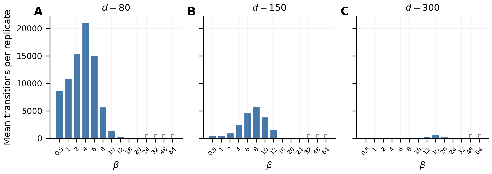
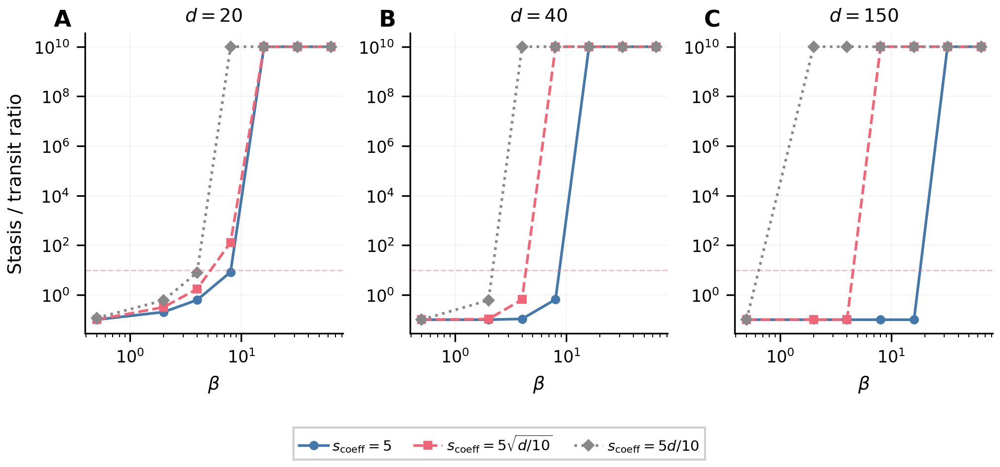
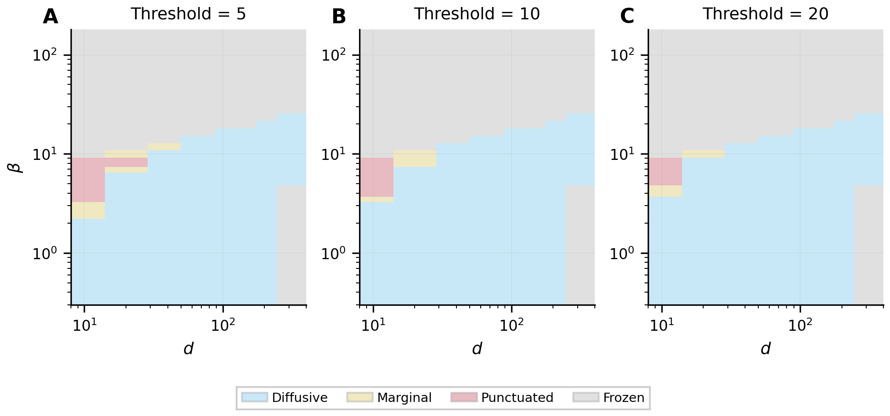
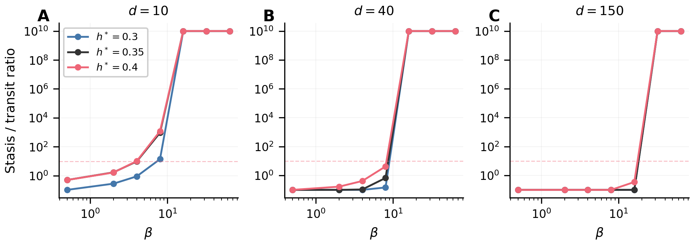
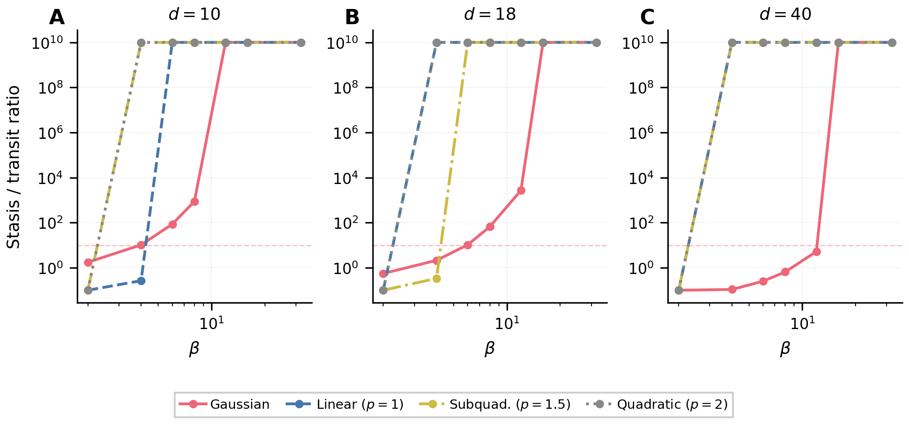
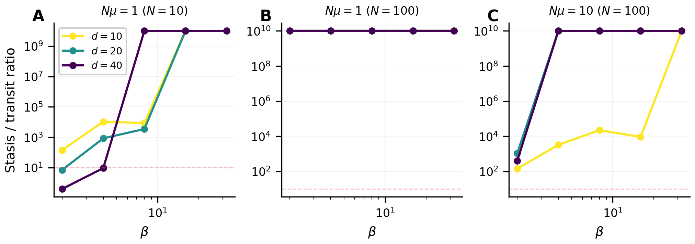